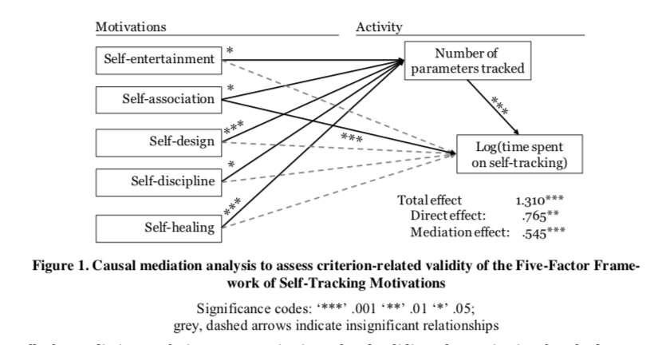
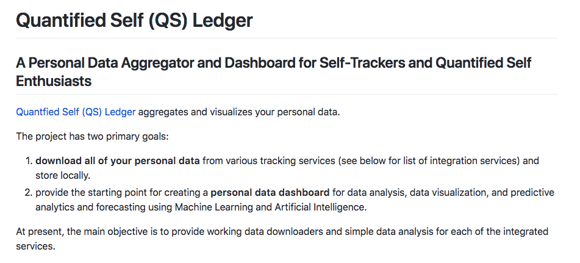
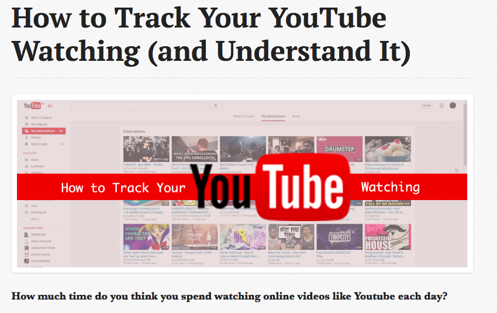
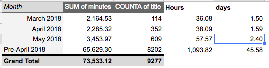

GDPR? Data Leaks? Privacy?
Your data is an opportunity.
Personal Example of Improved Health.
Circa 2015.
... and a self-tracker!
Part 1: How to measure a life?
Quantified Self / Self-Tracking
(def.)
Measuring or documenting something about your self to gain meaning or make improvements.
Examples of Self-Tracking / QS / Lifelogging
github.com/markwk/awesome-quantified-self
What Do I Track...?
More on My Tracking and How I Visualize My Data
Why do People Self-Track

Source: Gimpel, Henner, Marcia Nißen, and Roland Görlitz. “Quantifying the Quantified Self: A Study on the Motivations of Patients to Track Their Own Health.” (2013)
Why Track Your Life?: Benefits of Self-Tracking
- Improved Health. Support and track your fitness.
- Better Time Management, Improved Productivity.
- Augment your memory. Remember more stuff.
- Manage your money
- Achieve goals. Support habits. Manage projects
- Understand your mood, energy level and stress.
- Curiosity? Learn stuff about yourself.
- Feedback and Engagement with life.
- Personal Data is the Future.
Opportunities
in the Tracking and Personal Data Space
- Enabling and tracking new data points
=> New sensors, cheaper testing, new tracking apps, etc. - Deriving insight and meaning from existing data
=> More data and data accessibility, improved data science and machine learning, accessible ml/ai services, etc.
My Contributions and Work
Enabling and tracking new data points
- PodcastTracker.com
- PhotoStats.io
- BioMarkerTracker.com
Deriving insight and meaning from existing data
- Quantified Self (QS) Ledger
a web service to track your podcast listening and view your stats.
mobile app for iOS and Android that tracks and auto-tags your photo library, helping you understand and find your photos.
Open Source Database on Key Health Biomakers, and App for Aggregating and Storing Blood Test Results
Part 2: Python for Self-Trackers
A Personal Data Aggregator and Dashboard for Self-Trackers and Quantified Self Enthusiasts
github.com/markwk/qs_ledger
Youtube History:
www.markwk.com/youtube-tracking.html
Youtube Time:
Part 3:
How to Become a Data-Driven You
What Should You Track?
Four Essential Areas Everyone Should Track
- Health
- Time
- Money
- Goals, Projects and Tasks
How to Track?
A Couple Recommendations
- Health: Blood Tests and Sleep
- Time: RescueTime
- Money: Mint.com
- Goals, Projects and Tasks: Todoist